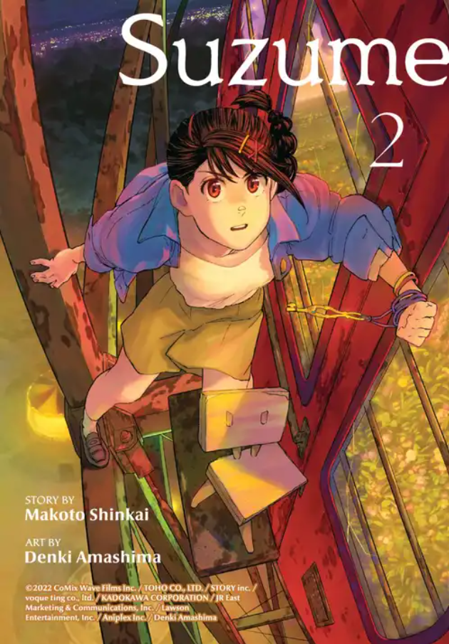

suzume 2
High school junior Suzume runs into a handsome stranger, Souta, who tells her he is looking for a door and asks where he can find ruins in her town. She points him toward a resort that has long fallen past all hope of repair, then thinks better of it and races after him to warn him of the danger of trespassing there. While fruitlessly searching for Souta, Suzume opens a door seemingly to nowhere and finds a starry landscape stretch out on the other side of the frame. Later, at school, she realizes she’s the only one who can see an ominous, worm-like colossus emerge from the mountains and rushes back to the ruins where she finds Souta struggling to shut the monster back in the door. Suzume helps Souta close the door on the mythical worm, which is revealed to be the cause of massive earthquakes, never knowing that her involvement would soon leave Souta trapped in the three-legged wooden chair Suzume’s late mother crafted for her and send them both on a cross-country race to seal all the worms away and save Japan from devastation.